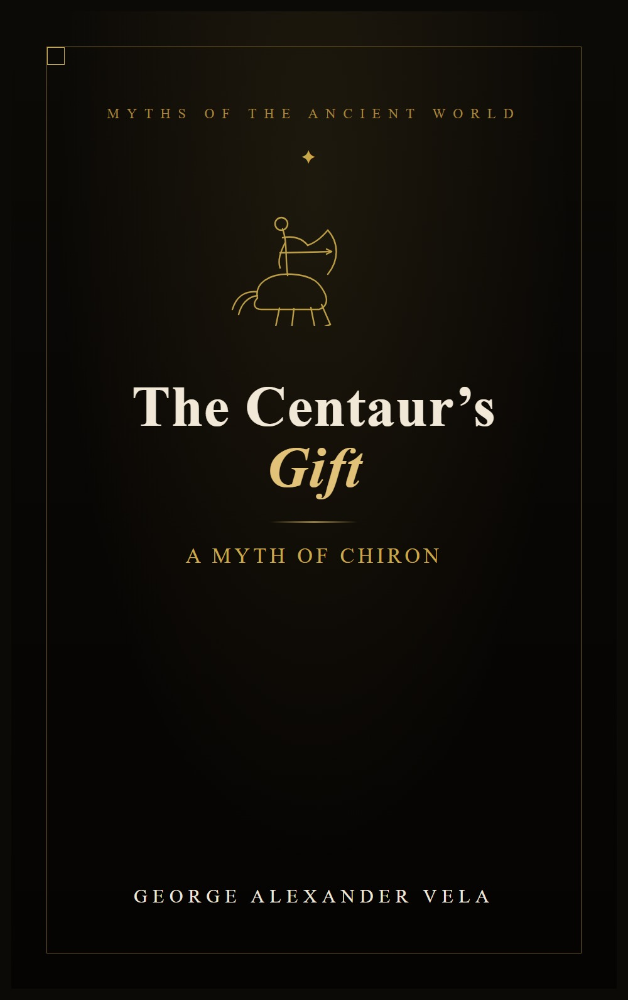

Palamedes — The Odyssey Never Says His Name
He exposed Odysseus's feigned madness. Odysseus repaid him with a forged letter and a pit of stones.
Read the essay →Get The Centaur's Gift free — a short novel about Chiron, never sold anywhere — join the list →
Greek myth retold straight from Homer, the Attic tragedians, and Ovid — never modernized past recognition, never summarized. One witty, unbroken narrator's voice across all ten books.
The greatest archer at Troy never fought a single battle in the open. He fought all of them from behind his brother's shield. Then Achilles falls, the dead man's armour goes to the wrong man by a rigged vote, and Ajax — cheated, humiliated, and abandoned by the gods — turns his sword on himself. What follows is the part the war songs skip: a brother left holding a body the army would rather forget, and a homecoming to Salamis where an old king waits with one question.
Buy on Amazon · All Books in the Series →
New here? Start with the essay readers find first — Does the Trojan Horse appear in the Iliad?
Retellings of the Greek myths that remember what the legends chose to forget — told in a voice that is always present, never neutral, and rarely kind to the poets who came before. Grouped into the Trojan War cycle, the Theban cycle, and standalone hero journeys — see the full series →
 Book I
The Fall from Heaven
Book I
The Fall from Heaven
 Book II
Hercules and the Cradle of Thunder
Book II
Hercules and the Cradle of Thunder
 Book III
The Hound of Troy
Book III
The Hound of Troy
 Book IV
The Amazon's End
Book IV
The Amazon's End
 Book V
The Dragon's Teeth
Book V
The Dragon's Teeth
 Book VI
The Architect of Ithaca
Book VI
The Architect of Ithaca
Short essays on the Greek myths — what the ancient sources actually say, and what the legends quietly forget.
He exposed Odysseus's feigned madness. Odysseus repaid him with a forged letter and a pit of stones.
Read the essay →Fourteen labours were performed. Only twelve made the official count — two were struck out on a technicality.
Read the essay →Eos asked Zeus to make her mortal lover immortal. She forgot to ask for his youth. He aged forever.
Read the essay →Deep dives into the myths and the gaps between legend and truth. Exploring the stories the ancient poets told—and what they left out.

A short novel about Chiron, the one centaur the old myths could never quite bring themselves to make a monster — never sold anywhere, yours free the moment you join.
No spam. Unsubscribe at any time.